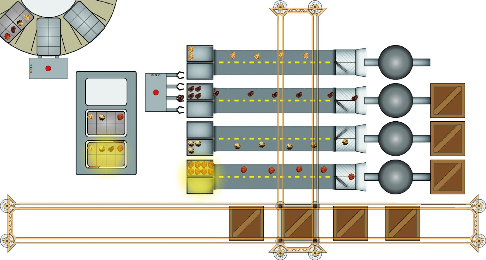
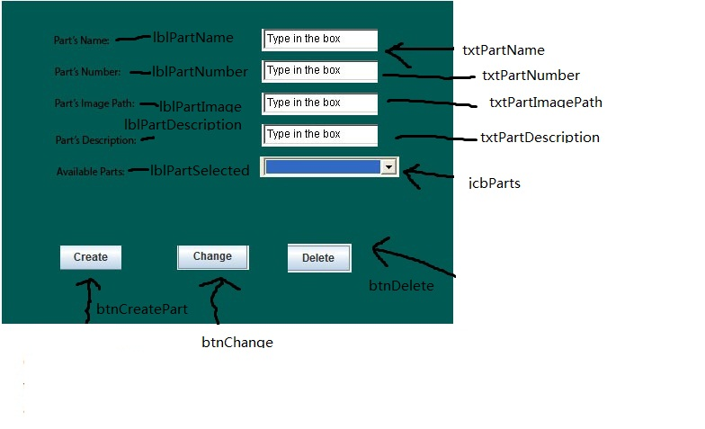
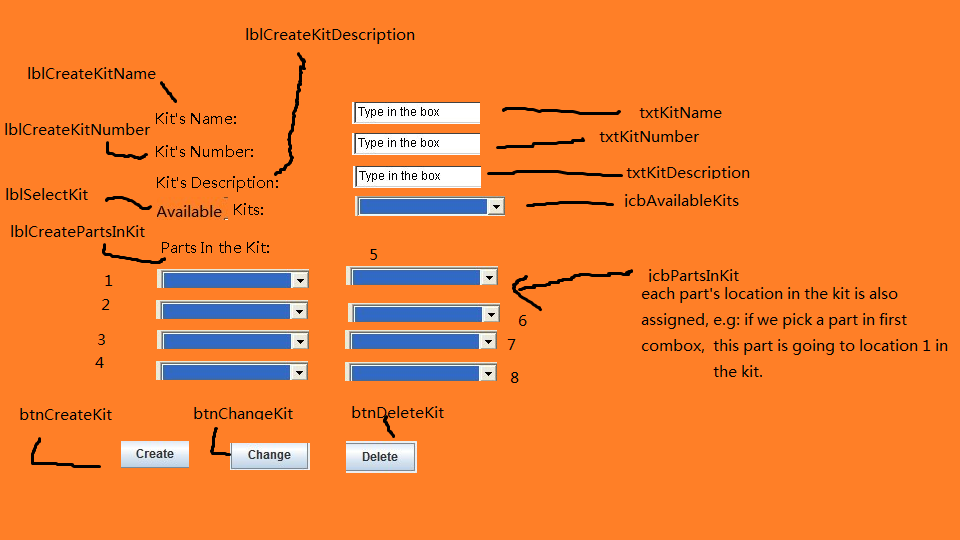
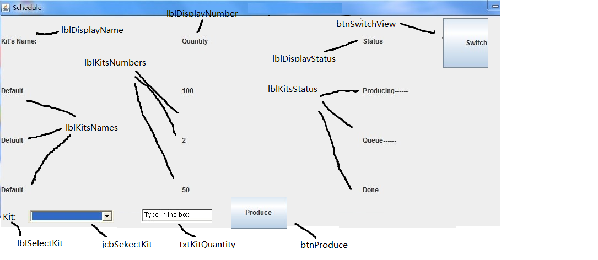
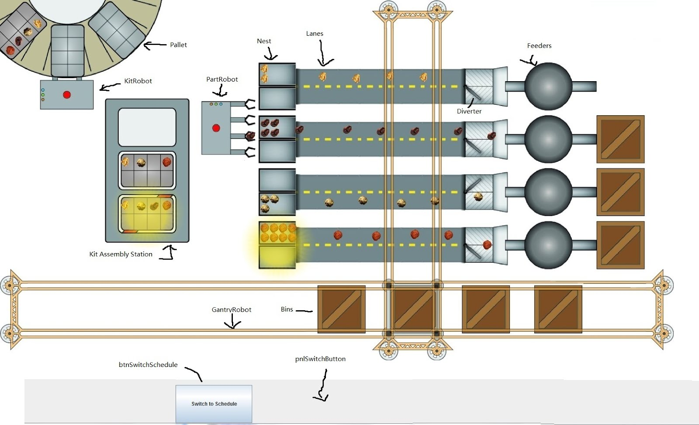
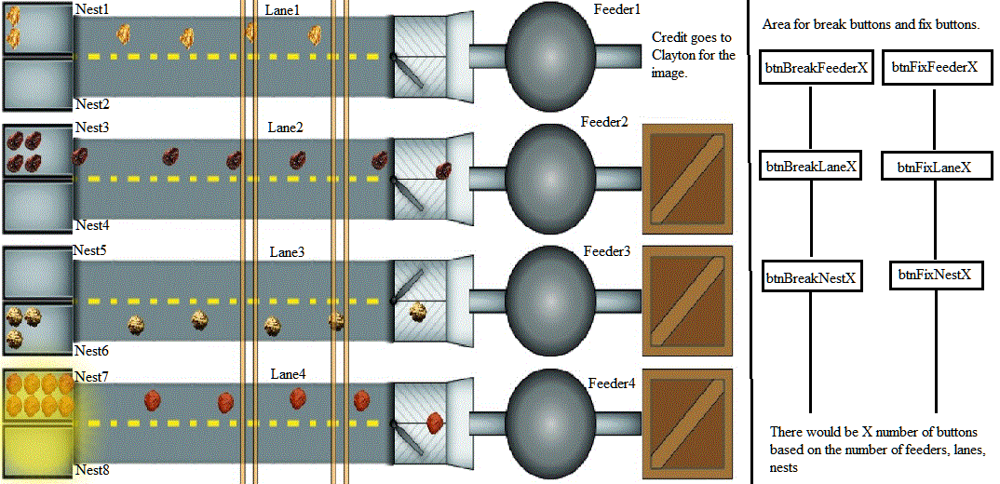
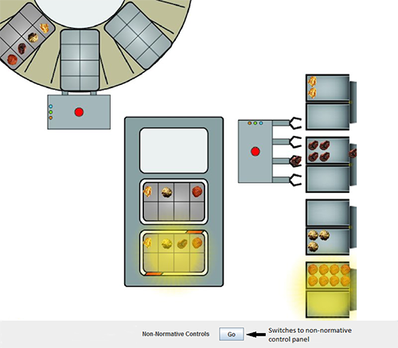
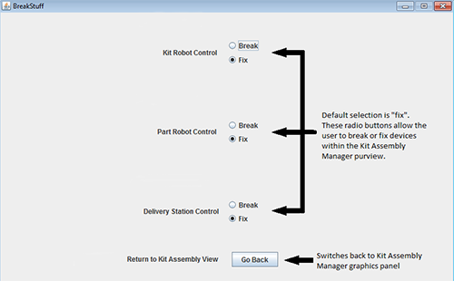
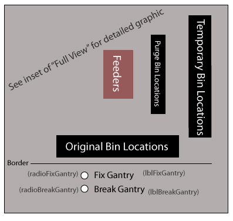

Andrew Downing - Server, ConnectPanel, NetComm, networking message classes
Anthony Quach - Lane Manager
Clayton Ketner - Graphics and most mock-up images
Cullon Hecox - Gantry Manager
Joseph (Tianbo) Li - Part Manager, Kit Manager, Factory Production Manager
Justin Sanders - Kit Assembly Manager, Purpose/Overview, Requirements
CS200 - Group 11 “Java Bosses”
Kitting Cell Design Document
Purpose/Overview:
This program is designed to provide GUI support to a kitting cell that assembles kits full of parts for use by other assembly cells. There will be one server application to interact with the back end of the kitting cell and track the state of each of the cell’s devices. There will be several client applications that will serve as a GUI for various humans needing to interact with the kitting cell. These client applications will communicate with the server application to display the state of various cell devices to their respective user. They will also take input to send configuration information to the cell. Figure 1 below shows what the factory production manager’s monitoring screen will look like.

Figure 1: Concept art of the factory manager’s view of the kitting cell.
Requirements:
This piece of software will have one server application which will send and receive information to and from the back end of the kitting cell and will communicate similarly with several GUI clients. The server will hold the “state” information about each device within the cell. This information may be updated by the front or back end. Each of the client application GUIs will allow a kitting cell employee to view the state of the device(s) for which they are responsible. Some GUIs will also allow the user to set configuration information or simulate non-normative scenarios within the factory. The GUI clients consist of:
- Parts Manager
- Set available parts ( create, edit, delete )
- Parts will have the following attributes ( number, name, description, image )
- This panel will not have any graphics
- Parts will be serializable
- Kit Manager
- Set available kits ( create, edit, delete )
- Kits will have the following attributes ( number, name, description, static image )
- Assigns location of a part in the kit
- This panel will not have graphics
- Kits will be serializable
- Factory Production Manager
- Specific the kit making queue for the factory from available kits list
- Which kit
- How many of each
- View current production schedule
- Graphical view of entire factory
- Lane Manager
- Graphics for:
- Feeders
- Lanes
- Nests
- Diverters
- Nest cameras
- Panel for non-normative operation
- Break/fix devices within lane manager’s purview
- Kit Assembly Manager
- Graphics for:
- Part robot
- Kit robot
- Kitting stand
- Kit delivery station
- Panel for non-normative operation
- Break/fix devices within kit manager’s purview
- Gantry Robot Manager
- Graphics for:
- Gantry robot
- Parts bins
- Purge station
- Panel for non-normative operation
- Break/fix devices within gantry robot manager’s purview
Data Classes (these all implement Serializable):
- GUIEntity
- Constructor(double x, double y)
- Constructor(double x, double y, double rotation)
- Member data:
- String imagePath - the path/filename of the image
- ImageIcon image - the image for the entity
- speed - speed in pixels per second
- x_last - x location at last setDesired method call
- y_last - y location at last setDesired method call
- x_current - current x location (double)
- y_current - current y location (double)
- x_desired - desired x location (double)
- y_desired - desired y location (double)
- rotation_current - current rotation (double)
- rotation_desired - desired rotation (double)
- Methods:
- void setCurrentX(double x)
- void setCurrentY(double y)
- void setCurrentRotation(double angle)
- void setCurrentLocation(Point2D.Double location)
- void setDesiredX(double x)
- void setDesiredY(double y)
- void setDesiredRotation(double angle)
- void setDesiredLocation(Point2D.Double location)
- double getCurrentX()
- double getCurrentY()
- double getCurrentRotation()
- Point2D.Double getCurrentLocation()
- double getDesiredX()
- double getDesiredY()
- double getDesiredRotation()
- Point2D.Double getDesiredLocation()
- void tick(long elapsedMillis)
- Part-- implements serializable
- This class defines a parts and its attributes.
- Member Data:
- number – int part number
- name – string part name
- description – string part description
- Methods:
- setPartName() – set the name of the part
- setPartDescription() – return the description of the part
- setPartNumber() – set the number of the part(it has to be a specific one)
- getPartImagePath() - return image path of the part
- getPartsName() – return the name of the part
- getPartsNumber() – return the number of the part
- getPartsDescription() – return the description of the part
- deletePart() – delete this kind of part and delete this kind part from the arrayList
- GUIPart
- Contains data and methods for drawing and animating a part
- Constructor: GUIPart(Part part, double x, double y)
- Member data:
- public Part part - used to access part data
- public GUIEntity guiEntity - used to access movement data
- Methods:
- void tick(long elapsedMillis) - calculates movement
- void draw(Graphics g, long elapsedMillis) - calls tick(), draws the part
- Kit --implements serializable
- This class defines a kit and its attributes, use gridLayout to define the part location.
- Member Data:
- number – int kit number.
- name – string kit name
- description – string kit description
- kitImagePath - file path of kit image
- PartsInKit - list of what parts does this kit need
- kitStatus - is it completed, a part is missing, a part’s location is wrong, or in queue
- GUIKit guiKit - used to easily link to the GUI equivalent
- Methods:
- setKitName() – set the name of the kit
- getKitStatus() - return the kit status
- setKitStatus() - set the kit status
- setKitDescription() – return the description of the kit
- setKitNumber() – set the number of the kit (it has to be a specific one)
- setPartsInKit(ArrayList<Kit> kits) - set the parts in a kit
- getPartsInKit() - get the parts in a kit
- GUIKit
- Contains data and methods for drawing and animating a kit
- Constructor: GUIKit(Kit kit, double x, double y)
- Member data:
- public Kit kit - used to access kit data
- public GUIEntity guiEntity - used to access movement data
- Methods:
- void tick(long elapsedMillis) - calculates movement
- void draw(Graphics g, long elapsedMillis) - calls tick(), draws the part
- PartRobot
- This class defines and controls a part robot.
- Member Data:
- partsInGripper - ArrayList of Part type of what is in the grippers
- isBroken - boolean variable if robot is broken
- Methods:
- getKitStandPos - returns the kitting position of the part robot, returns null if the part robot is not at the kitting stand.
- getNestPos - return the nest position of the part robot, returns null if the part robot is not at any nest
- setBroken - sets isBroken
- getBroken - returns isBroken value
- GUIPartRobot
- Contains data and methods for drawing and animating a part robot
- Constructor: GUIPartRobot(PartRobot partRobot, double x, double y)
- Member data:
- public PartRobot partRobot - used to access part robot data
- public GUIEntity guiEntity - used to access movement data
- Methods:
- void tick(long elapsedMillis) - calculates movement
- void draw(Graphics g, long elapsedMillis) - calls tick(), draws the part
- KitRobot
- This class defines and controls a part robot.
- Member Data:
- kitInHand - a Kit variable of the kit in its hands/grippers
- isBroken - boolean variable if robot is broken
- GUIKitRobot guiKitRobot - used to easily link to the GUI equivalent
- Methods:
- getPos - returns the kitting stand position of the kit robot. returns null if the robot is not at the kitting stand.
- setBroken - sets isBroken
- getBroken - returns isBroken value
- GUIKitRobot
- Contains data and methods for drawing and animating a kit robot
- Constructor: GUIKitRobot(KitRobot kitRobot, double x, double y)
- Member data:
- public KitRobot kitRobot - used to access kit robot data
- public GUIEntity guiEntity - used to access movement data
- Methods:
- void tick(long elapsedMillis) - calculates movement
- void draw(Graphics g, long elapsedMillis) - calls tick(), draws the part
- KitDeliveryStation
- This class contains all the information about the state of the kit delivery station.
- Member data:
- isBroken - boolean variable if conveyor is broken
- pallets - ArrayList of pallets that are currently visible
- GUIKitDeliveryStation guiKitDeliveryStation - used to easily link to the GUI equivalent
- Methods:
- setBroken - sets isBroken
- getBroken - returns isBroken value
- GUIKitDeliveryStation
- Contains data and methods for drawing and animating the kit delivery station
- Constructor: GUIKitDeliveryStation (KitDeliveryStation kitDeliveryStation, double x, double y)
- Member data:
- public KitDeliveryStation kitDeliveryStation - used to access delivery station data
- public GUIEntity guiEntity - used to access movement data
- Methods:
- void tick(long elapsedMillis) - calculates movement
- void draw(Graphics g, long elapsedMillis) - calls tick(), draws the part
- Pallet
- This class contains all the information about a pallet.
- Member data:
- hasKit - boolean variable if the pallet has a kit.
- kitFull - boolean variable to display generic full/empty kit.
- Methods:
- GUIPallet
- Contains data and methods for drawing and animating the pallet
- Constructor: GUIPallet (Pallet pallet, double x, double y)
- Member data:
- public Pallet pallet - used to access pallet data
- public GUIEntity guiEntity - used to access movement data
- Methods:
- void tick(long elapsedMillis) - calculates movement
- void draw(Graphics g, long elapsedMillis) - calls tick(), draws the part
- Gantry
- This class defines and controls a gantry robot.
- Member Data:
- holdingObject - boolean variable that detects if the
- gantry is currently holding an object
- broken- boolean variable recording the state of this client
- binLocations - arraylist of GUIBin objects used to detect available locations to set a bin
- Methods:
- isHoldingObject - returns value of holdingItem
- retrieveFullBin(bin, feeder) - acts according to which
- feeder requests which bin (this method will utilize the helper
- methods moveTo(), pickUp(), dump(), and drop())
- placeInPurgeStation(feeder) - acts according to which
- feeder was just fed (this method will utilize the helper methods
- moveTo(), pickUp(), dump(), and drop())
- placeInTempLoc - acts according to
- binLocations (this method will utilize the helper methods
- moveTo(), pickUp(), dump(),and drop())
- isBroken - returns value of broken; affects the physical look of the gantry
- robot depending on broken state
- moveTo - either move to the new bin’s location, move to the feeder with the new bin, move empty bin to purge station, or move purged bin to temporary location depending
- pickUp - commands gantry to pick up the bin at its current array index (in availableLocations arraylist)
- dump - feed contents of bin into feeder
- drop - place bin at gantry’s current array index (in availableLocation arraylist)
- GUIGantry
- Contains data and methods for drawing and animating the gantry
- Constructor: GUIGantry(Pallet pallet, double x, double y)
- Member data:
- public Gantry gantry - used to access gantry data
- public GUIEntity guiEntity - used to access movement data
- Methods:
- void tick(long elapsedMillis) - calculates movement
- void draw(Graphics g, long elapsedMillis) - calls tick(), draws the part
- Bin(Part part)
- This class contains all the information about bins. The bins will be responsible for
- a single type of part, which will be passed into its constructor upon
- instantiation
- Member Data:
- partName- name of part represented by type String
- partImage - image of part used to identify bin
- xPos - position of x-coordinate
- yPos - position of y-coordinate
- GUIBin guiBin - used to easily link to the GUI equivalent
- Methods:
- getPartType- returns part type held by bin
- GUIBin
- Contains data and methods for drawing and animating a bin
- Constructor: GUIBin (Bin bin, double x, double y)
- Member data:
- public Bin bin - used to access bin data
- public GUIEntity guiEntity - used to access movement data
- Methods:
- void tick(long elapsedMillis) - calculates movement
- void draw(Graphics g, long elapsedMillis) - calls tick(), draws the part
- PartCamera:
- Member Data:
- cameraBlocked - boolean for when the robot is blocking the camera
- previousImage - image of what the nest looked like previously
- currentImage - image of the picture just taken
- nestUnchanged - boolean for checking if the new picture matches the
previous picture of the nest
- Methods:
- takePicture() - takes a picture when there is a clear view
- cameraIsBlocked() - cameraBlocked gets set to true
- cameraIsClear() - cameraBlocked gets set to false
- compareImages() - compares previousImage with currentImage,
nestUnchanged is true if they are the same, otherwise it is false, previousImage is then set to currentImage.
- isNestUnchanged() - returns nestUnchanged
- GUIPartCamera
- Contains data and methods for drawing the partcamera flash
- Constructor: GUIPartCamera(PartCamera camera, double x, double y)
- Member data:
- public PartCamera camera - used to access partcamera data
- public GUIEntity guiEntity - used to access position data
- long age - how long the flash has been shown for
- long expireTime - how long the flash should last (in milliseconds)
- Methods:
- void tick(long elapsedMillis) - updates age
- boolean isExpired() - returns true if age > expireTime. If true, then this object should be deleted
- void draw(Graphics g, long elapsedMillis) - calls tick(), draws the flash
- KitCamera:
- This class defines the components of the kitting stand camera
- Member Data:
- currentKit - Kit that is supposed to be created
- Methods:
- getCurrentKit - gets currently queued kit for comparison
- takePicture - triggers picture flash animation and compares currentKit
to the Kit at the inspection station, sets kitStatus.
- GUIKitCamera
- Contains data and methods for drawing the kitcamera flash
- Constructor: GUIKitCamera(KitCamera camera, double x, double y)
- Member data:
- public KitCamera camera - used to access kitcamera data
- public GUIEntity guiEntity - used to access position data
- long age - how long the flash has been shown for
- long expireTime - how long the flash should last (in milliseconds)
- Methods:
- void tick(long elapsedMillis) - updates age
- boolean isExpired() - returns true if age > expireTime. If true, then this object should be deleted
- void draw(Graphics g, long elapsedMillis) - calls tick(), draws the flash
- Feeder
- A feeder object.
- Member Data:
- diverter - boolean variable for which side of lane items go.
- partsLow - boolean variable for when parts are low.
- amount - int variable for amount of parts in feeder.
- Methods:
- setPartsLow() - makes partsLow true
- setPartsUnlow() - makes partsLow false
- checkIfLow() - check if there are parts in feeder, (return partsLow )
- changeLane() - changes the lane parts are going. (diverter = !diverter)
- getLane() - returns what lane parts are going. (Diverter, false is lane 1, true is lane 2 )
- GUIFeeder
- Contains data and methods for drawing and animating a feeder
- Constructor: GUIFeeder(Feeder feeder, double x, double y)
- Member data:
- public Feeder feeder - used to access feeder data
- public GUIEntity guiEntity - used to access movement data
- Methods:
- void tick(long elapsedMillis) - calculates movement
- void draw(Graphics g, long elapsedMillis) - calls tick(), draws the part
- Lane
- A lane object.
- Member Data:
- GUILane1 - first GUILane
- GUILane2 - second GUILane
- velocity - int variable for speed of the lane.
- laneOn - boolean variable for when the lane is on.
- movingItems - ArrayList of X parts.
- vibration - int variable for how much lane is vibrating.
- Methods:
- isLaneOn() - checks if lane is on, returns LaneOn
- amplifyVibration() - increases vibration of lane
- lowerVibration() - decreases vibration of lane
- removeItem() - remove a part from MovingItems
- addItem() - add a part to MovingItems
- getSpeed() - return velocity of the lane
- GUILane
- Contains data and methods for drawing and animating a lane
- Constructor: GUILane(Lane lane, double x, double y)
- Member data:
- public Lane lane - used to access lane data
- public GUIEntity guiEntity - used to access movement data
- Methods:
- void tick(long elapsedMillis) - calculates movement
- void draw(Graphics g, long elapsedMillis) - calls tick(), draws the part
- Nest
- A Nest object.
- Member Data:
- nestedItems - ArrayList of X parts.
- nestFull - boolean variable for when nest is full.
- limit - int variable for number of parts the nest can hold.
- switch - boolean for when nest is up or down
- Methods:
- isNestFull() - checks if the nest is full, return NestFull
- addPart() - adds a part to the NestedItems
- removePart() - removes a part from NestedItems
- dumpNest() - removes all parts from NestedItems
- flipSwitch() - flips the switch ( switch = !switch )
- GUINest
- Contains data and methods for drawing and animating a nest
- Constructor: GUILane(Nest nest, double x, double y)
- Member data:
- public Nest nest - used to access nest data
- public GUIEntity guiEntity - used to access movement data
- Methods:
- void tick(long elapsedMillis) - calculates movement
- void draw(Graphics g, long elapsedMillis) - calls tick(), draws the part
- WholeLane
- Class with a feeder, lane, and nest as a set.
- Member Data:
- myFeeder - Feeder object for the lane.
- myLane - Lane object for the lane.
- myTopNest - Top nest object for lane.
- myBottomNest - Bottom nest object for lane.
- Methods:
- turnOnLane() - turns its lane on
- isFeederLow() - checks if feeder is low
- isTopNestFull() - checks if top nest is full
- isBottomNestFull() - checks if bottom nest is full
- vibrateLane() - increases vibration of the lane
- unvibrateLane() - decreases vibration of the lane
- takePicOfNests() - takes a picture of both nests
- flipNestOneSwitch() - flips Nest 1’s switch
- flipNestTwoSwitch() - flips Nest 2’s switch
- GUIWholeLane
- Contains data and methods for drawing the whole lane
- Constructor: GUIWholeLane(WholeLane wholeLane, double x, double y)
- Member data:
- public WholeLane wholeLane - used to access lane data
- public GUIEntity guiEntity - used to access movement data
- Methods:
- void draw(Graphics g, long elapsedMillis) - draws all components of the lane
Networking Message Classes (these all implement Serializable):
- CloseConnectionMsg
- networking message indicating to close connection
- class is empty (no member data or methods) because the requested command is self-evident from the data type
- StringMsg
- networking message containing a string
- Member Data (all public):
- type - instance of an enum indicating the type of message (NewPart, ChangePart, DeletePart, NewKit, ChangeKit, DeleteKit, ProduceKits, NonNormative)
- message - content of string message (generally empty strings indicate success and non-empty strings are an error description)
- Methods:
- StringMsg - constructor to set up StringMsg with specified type and message
- NewPartMsg
- networking message indicating to add a new part
- (is a separate class even though it only contains 1 instance variable because it specifies that the command is to add a new part)
- Member Data (all public):
- part - Part instance to add
- ChangePartMsg
- networking message indicating to change a part
- Member Data (all public):
- oldName - old name of part to change
- part - replacement Part
- DeletePartMsg
- networking message indicating to delete a part
- Member Data (all public):
- name - name of part to delete
- PartListMsg
- networking message listing all available parts
- Member Data (all public):
- parts - ArrayList of available parts
- NewKitMsg
- networking message indicating to add a new kit
- (is a separate class even though it only contains 1 instance variable because it specifies that the command is to add a new kit)
- Member Data (all public):
- kit - Kit instance to add
- ChangeKitMsg
- networking message indicating to change a kit
- Member Data (all public):
- oldName - old name of kit to change
- kit - replacement Kit
- DeleteKitMsg
- networking message indicating to delete a Kit
- Member Data (all public):
- name - name of kit to delete
- KitListMsg
- networking message listing all available kits
- Member Data (all public):
- kits - ArrayList of available kits
- ProduceKitsMsg
- networking message specifying kits to produce in factory
- Member Data (all public):
- name - name of kit to produce
- howMany - how many new kits to produce
- ProduceStatusMsg
- networking message listing status of all kits in production
- Member Data (all public):
- kitCmds - ArrayList of ProduceKitsMsg’s that have been sent to server
- kitStatus - ArrayList of instances of an enum indicating whether each kit command is queued, in production, or completed
- ItemUpdateMsg<T>
- generic class updating the state of all items of specified type T
- Member Data (all public):
- add - TreeMap<Integer, T> in which key is ID of new item and entry is new item
- change - TreeMap<Integer, T> in which key is ID of changed items and entry is changed item
- delete - ArrayList<Integer> containing IDs of deleted items
- FactoryStateMsg
- networking message containing all information needed to generate factory state
- note that if a client sends an empty FactoryStateMsg, it means they are requesting to be kept up-to-date with the factory state as long as it is connected to the server
- Member Data (all public):
- These are all TreeMaps in which the keys are integers (the item IDs) and the entries are the GUI versions of the specified classes.
- parts
- kits
- partRobots
- kitRobots
- kitDeliveryStations
- pallets
- gantries
- bins
- partCameras
- kitCameras
- feeders
- lanes
- nests
- wholeLanes
- Methods:
- update - updates the factory state given a FactoryUpdateMsg
- FactoryUpdateMsg
- networking message updating factory state
- Member Data (all public):
- The fields below are ArrayLists of ItemUpdateMsgs of the non-GUI versions of the specified classes.
- parts
- kits
- partRobots
- kitRobots
- kitDeliveryStations
- pallets
- gantries
- bins
- partCameras
- kitCameras
- feeders
- lanes
- nests
- wholeLanes
- The fields below are TreeMaps in which the keys are integer IDs and the entries are updated GUIEntity’s of the specified classes. (Adding and deleting non-GUI classes are assumed to add and delete their GUI counterparts. If a non-GUI item is added, its GUIEntity should be updated here.)
- guiParts
- guiKits
- guiPartRobots
- guiKitRobots
- guiKitDeliveryStations
- guiPallets
- guiGantrys
- guiBins
- guiPartCameras
- guiKitCameras
- guiFeeders
- guiLanes
- guiNests
- guiWholeLanes
- NonNormativeItemMsg
- networking message indicating to break or fix an item
- Member Data (all public):
- fix - true if should fix item, false if should break item
- type - instance of an enum indicating the type of item to break or fix (tpKitRobot, tpPartRobot, tpKitDeliveryStation, tpNest, tpLane, tpFeeder, tpGantry)
- id - integer ID of item to break or fix
Manager Classes:
Server:
- Server
- class implementing a non-GUI server application to coordinate factory clients over a network
- Member Constants (all public and static):
- Port - networking port that server listens on
- SettingsPath - path of file where factory state is saved
- Member Data (all private):
- serverSocket - server socket used to set up connections with clients
- netComms - ArrayList of client connections
- wantsFactoryState - ArrayList of booleans indicating whether each client wants to be updated with the factory state
- partTypes - ArrayList of Parts that are available to produce
- kitTypes - ArrayList of Kits that are available to produce
- produceStatus - ProduceStatusMsg storing current kit production status
- factoryState - FactoryStateMsg storing current factory state
- factoryUpdate - FactoryUpdateMsg storing changes to broadcast to clients on next timer tick
- Methods:
- Server - constructor for server class
- main - instantiates a new Server
- actionPerformed - called during timer tick; updates simulation and broadcasts factoryUpdate to clients
- msgReceived - handle message received from clients (takes message and NetComm that received the message); generally calls another method to handle the specific message
- addPart - takes an AddPartMsg and client index, adds part to partTypes (if valid), sends StringMsg to client indicating success or failure
- changePart - takes a ChangePartMsg and client index, changes specified part (if valid and not in production), sends StringMsg to client indicating success or failure
- deletePart - takes a DeletePartMsg and client index, deletes part with specified name (if exists), sends StringMsg to client indicating success or failure
- listParts - takes client index and sends partTypes to client in a PartListMsg (called when server receives a PartListMsg, but received message is not a parameter because it doesn’t influence behavior of the method)
- addKit - takes an AddKitMsg and client index, adds kit to kitTypes (if valid), sends StringMsg to client indicating success or failure
- changeKit - takes a ChangeKitMsg and client index, changes specified kit (if valid and not in production), sends StringMsg to client indicating success or failure
- deleteKit - takes a DeleteKitMsg and client index, deletes kit with specified name (if exists), sends StringMsg to client indicating success or failure
- listKits - takes client index and sends kitTypes to client in a KitListMsg (called when server receives a KitListMsg, but received message is not a parameter because it doesn’t influence behavior of the method)
- produceKits - takes a ProduceKitsMsg and client index and appends it to produceStatus (if valid) indicating that it is queued, sends StringMsg to client indicating success or failure
- sendProduceStatus - takes client index and sends produceStatus to client (called when server receives a ProduceStatusMsg)
- sendFactoryState - takes client index, sets wantsFactoryState to true for this client, and sends current factoryState to client (called when server receives a FactoryStateMsg)
- changeNormative - takes a NonNormativeMsg and client index, breaks or fixes specified item, sends StringMsg to client indicating success or failure
- loadSettings - load factory state from file
- saveSettings - save factory state to file
Part Manager:
Each time you see the icbXXXX means jcbXXXX in the MOCKUPS, the software paint can’t separate i and j

PartClient
This class contains the main method and communicates with the server.
Member Data:
parts - ArrayList of all parts
netComm - NetComm instance to communicate with server
pnlConnect - ConnectPanel to let user connect to server
pnlPart- PartPanel for prompting user input
Methods:
msgReceived - handles message from server (takes message and
NetComm that received the message)
actionPerformed() - handle the input, send any modification of the kits to
server
PartPanel:
Member Data:
lblPartNumber - Label for part number
lblPartDescription - Label for part Desc
lblPartName - Label for part name
lblPartImage - Label for part image
lblPartSelected - Label for prompting the user to select a part
btnCreatePart - button for making a part
btnDelete - Delete a selected part
btnChange - Change a selected part
txtPartNumber - TextField for part number
txtPartDescription - TextField for part description
txtPartName - TextField for part name
txtPartImagePath - TextField for part image path
jcbParts - ComboBox for all of the parts
Methods:
actionPerformed() - handle the input, send any modification of the kits to server
Kit Manager:
Each time you see the icbXXXX means jcbXXXX in the MOCKUPS, the software paint can’t separate i and j

KitClient:
This class contains the main method and communicates with the server.
Member Data:
parts- ArrayList of all the parts
kits - ArrayList of all the kits
netComm- socket class to communicate with server
pnlConnect - ConnectPanel to let user connect to server
pnlKit- KitPanel for prompting user input
Methods:
getKitDescription() – get the description of the kit
geKitNumber() – get the number of the kit getKitName() – get the name of the kit
getPartsInKit() - get the arraylist of parts in the kit
msgReceived - handles message from server (takes message and
NetComm that received the message)
actionPerformed - receives action events from pnlConnect
KitPanel:
user can create a new kit, or order a existing kit.
Member Data:
lblCreateKitNumber - Label for prompting user the number of the new kit
lblCreateKitDescription - Label for kit Desc
lblCreateKitName - Label for kit name
lblCreatePartsInKit - Label for parts in a kit
lblSelectKit - Label for prompting user the name of a kit he wants to change or delete
btnDeleteKit - button for deleting a kit btnCreateKit- button for Creating a new kit
btnChangeKit - button for changing a selected kit
jcbPartsInKit - ArrayList of ComboBox for selecting parts in a kit when
creating or modifing a kit. (some of them can be empty, but parts in a kit at most can be 8)
txtKitNumber - TextField for kit number
txtKitDescription - TextField for kit description
txtKitName - TextField for kit name
jcbAvailableKits - ComboBox for the avaiable kits
Methods:
actionPerformed() - handle the input, send any modification of the kits to
server
Factory Production Manager:
Each time you see the icbXXXX means jcbXXXX in the
MOCKUPS, the software paint can’t separate i and j

FPClient:
This class contains the main method and communicates with the server.
Member Data:
pnlConnect - ConnectPanel to let user connect to server
factoryState - FactoryStateMsg that is kept in sync with the server copy
netComm- socket class to communicate with server, need to update the
parts and kits
pnlFPPanel - JPanel for showing the schedule
pnlFactory - JPanel to display the factory state in (contains pnlSwitchButton and pnlFactoryPaint)
pnlSwitchButton - JPanel for switch button (this panel only contains
btnSwitchSchedule)
pnlFactoryPaint - JPanel drawn inside pnlFactory
jcbSelectKit - Combobox for displaying what kits can be make
txtKitQuantity - JTextField for enter kit’s quantity
lblSelectKit - JLabel for user to select a kit
lblDisplayName - JLabel for display name
lblDisplayNumber- JLabel for display number
lblDisplayStatus- JLabel for display status
lblKitsNames - arraylist of kit’s label
lblKitsNumbers - arraylist of label of kits’ quantity
lblKitsStatus - arraylist of label of kits’ status
btnSwitchView - switch button for displaying the graphical view of factory
btnSwitchSchedule - switch button for displaying the schedule
btnProduce - Button for producing the kits
schedule<string kit’s name, int quantity> - TreeMap schedule to classify
kits and their quantity
Methods:
DeleteProducedKits(ArrayList <Kit> kits) – take the arraylist of the
available kits, check their status, if it is produced or in process, remove it from the arraylist.
writeSchdule() - Classlify the kits and write them into the labels on the
pnlFPPanel
msgReceived - handles message from server (takes message and
NetComm that received the message)
actionPerformed - handle the input, send any modification of the kits to
server, paint updated factory on timer tick if pnlFactory is showing
GUI View of Factory (most of the labeled items are contained in the factoryState variable)

Lane Manager:
LaneClient
This class shows all the feeder, lanes, nests operating.
Member Data:
Lanes - ArrayList of 4 WholeLanes.
pnlBreakThings - Panel for breaking things
pnlConnect - ConnectPanel to let user connect to server
netComm- NetComm instance to communicate with the server
factoryState - FactoryStateMsg that is kept in sync with the server copy
Methods:
takePictureOfLaneNests - takes a picture of specified lane’s nests if possible (lane index passed as parameter)
getPartFromNest - gets a part from specified nest (nest index passed as parameter)
feedFeeder - fill specified feeder (feeder index passed as parameter)
divertFeeder - switches the position of specified feeder’s diverter (feeder index passed as parameter)
fixLane - attempts to fix specified lane by increasing vibration (lane index passed as parameter)
paintWholeLanes() - paints all feeders, lanes, nests, parts
actionPerformed - receives action events from pnlConnect
msgReceived - handles message from server (takes message and NetComm that received the message)
Mockup of the client:

BreakThings
Panel with options for breaking parts of the lanes
Member Data:
btnBreakFeeder - ArrayList of 4 buttons that prevents the corresponding feeder from working
btnBreakLane - ArrayList of 4 buttons that causes the corresponding lane to stop
btnBreakNest - ArrayList of 8 buttons that causes the corresponding nest to spill
btnFixFeeder - ArrayList of 4 buttons that fix corresponding feeder
btnFixLane - ArrayList of 4 buttons that fix corresponding lane
btnFixNest - ArrayList of 8 buttons that fix corresponding nest
Methods:
actionListener - sends status of feeders, lanes, nests to server
Kit Assembly Manager:
KitAssemblyClient
This class contains the main method and communicates with the server.
Member Data:
queuedKits - ArrayList of currently queued kits
kitStandKits - ArrayList of kits on kitting stand (index 0-1 for assembly, 2
for inspection station).
netComm ( socket ) - instance of NetComm class for communication
with the server.
factoryState - FactoryStateMsg that is kept in sync with the server copy
kitCamera - instance of KitCamera
kitRobot - instance of a kit robot
partRobot - instance of a part robot
pnlConnect - declaration of ConnectPanel for connecting to server
pnlKitAssembly - JPanel to add the kitAssemblyGraphicsPanel and
pnlSwitchPanelButton to
pnlSwitchPanelButton - JPanel for a button to switch to the non-
normative controls panel (contained inside pnlKitAssembly)
kitAssemblyGraphicsPanel - declaration of instance of
KitAssemblyGraphicsPanel (contained inside pnlKitAssembly)
kitAssemblyBreakPanel - declaration of instance of
KitAssemblyBreakPanel
Methods:
sendKitRobotTask( startStation, endStation, time ) - sends task to kit
robot.
sendPartRobotTask( nestNumber, kitStation, time ) - sends task to part
robot.
getKitRobotPos - returns position of kit robot
getPartRobotPos - returns position of part robot
removeKitFromQueue - removes kit from queuedKits
removeKitFromKitStand - removes kit from kit stand
actionPerformed - receives action events from pnlConnect
msgReceived - handles message from server (takes message and NetComm that received the message)
Kit Assembly Panel (pnlKitAssembly) mock-up:

KitAssemblyGraphicsPanel
This class is a JPanel that displays the kitting stand, the kit robot, the kit delivery station, and the part robot.
Member Data:
Methods:
paintKitAssemblyPanel - paints background images and instructs objects
to repaint themselves.
takePicture - takes a picture
KitAssemblyBreakPanel
This class allows the user to break the kit robot, part robot, and kit delivery station
Member Data:
lblKitRobot - JLabel for kit robot
lblPartRobot - JLabel for part robot
lblKitDelivery - JLabel for kit delivery station
radioBreakKitRobot - JRadioButton to break the kit robot
radioFixKitRobot - JRadioButton to fix the kit robot
radioBreakPartRobot - JRadioButton to break the part robot
radioFixPartRobot - JRadioButton to fix the part robot
radioBreakKitDelivery - JRadioButton to break the kit delivery station
radioFixKitDelivery - JRadioButton to fix the kit delivery station
Methods:
actionListener - send message to server via netComm updating the
status of the kit robot, part robot, or kit delivery station.
KitAssemblyBreakPanel mock-up:

Gantry Robot Manager:
GantryClient
This class contains the main method and communicates with the server.
Member Data:
netComm- NetComm instance to communicate with server
pnlConnect - ConnectPanel to let user connect to server
factoryState - FactoryStateMsg that is kept in sync with the server copy
pnlGantry - instance of GantryPanel contained implementing a
GridBagLayout manager consisting of pnlGantryNorm and
pnlGantryNonNorm
Methods:
sendGantryTask( startStation, endStation, time ) - sends task to gantry
getGantryPos - returns position of gantry
getBinPos - returns position of bin
updateInfo - notifies server of any and all changes to bins and gantry
actionPerformed - receives action events from pnlConnect
msgReceived - handles message from server (takes message and NetComm that received the message)
GantryPanel
This class is a container panel consisting 3 subpanels. Elements are arranged
using GridBagLayout. It displays a wide view of the gantry robot.
Member Data:
pnlGantryNorm- instance of GantryNormPanel: normative panel displaying
inset of gantry
pnlGantryNonNorm- instance of GantryBreakPanel nonnormative break
panel displaying inset of gantry
gb- layout variable (type: GridBagLayout)
GantryNormPanel
This class consists of a normative view of all elements. It will respond to user
interaction from the GantryBreakPanel class.
Member Data:
bins- ArrayList of bins on the floor
gantry - gantry robot
binLocations - ArrayList of all possible locations of bins
originalLocations - ArrayList of bins’ original location before being moved
around (subset of binLocations)
purgeLocations - arraylist of purge stations (subset of binLocations)
tempLocations - arraylist of temporary locations (subset of binLocations)
Methods:
paintGantryPanel - paints background images and instructs objects to
repaint themselves.
takePicture - takes a picture
GantryBreakPanel
This class allows the user to break the gantry
Member Data:
lblGantry- JLabel for gantry
radioBreakGantry - JRadioButton to break the kit robot
lblBreakGantry - accompanying label for radioBreakGantry
radioFixGantry - JRadioButton to fix the gantry
lblFixGantry - accompanying label for radioFixGantry
Methods:
actionListener - send message to server via netComm updating the
status of the gantry
Gantry Mockup image:

Helper Classes:
- NetComm
- encapsulates networked communication with a single client or server
- Member Data (all private):
- node - object that is notified when a new message is received
- socket - client socket that is endpoint for network communication
- in - ObjectInputStream that reads messages related to this client over the network
- out - ObjectOutputStream that writes messages related to this client over the network
- Methods:
- NetComm - constructor that initializes communication with given node (that implements Networked) and given Socket; throws IOException if fails
- write - write specified object to output stream
- close - close connection
- NetCommReader
- inner class of NetComm that runs on a separate thread to receive messages
- Methods:
- run - keep polling for new messages, and forward received messages to network node (this is automatically called when thread starts)
- read - returns object read from input stream, or null if no new message, or a CloseConnectionMsg if either client or server disconnected from network
- ConnectPanel
- panel that all client (manager) classes display to let user connect to server; this class is based on SignInPanel.java in Andrew's HW3 submission
- Mockup (labeled components are described in Member Data section):

- Member Data (all private):
- txtServerAddress - text box to enter server domain name or IP address
- btnConnect - button to connect to server
- lblActionMsg - label for displaying message or error
- action - reference to action listener to notify when user presses connect to server button
- Methods:
- ConnectPanel - constructor that sets up the panel GUI and stores reference to action listener to notify to connect to server
- reset - reset text field and action message text
- setActionMsg - display specified action message, allowing HTML formatting
- setActionError - display specified action message in red text, allowing HTML formatting
- actionPerformed - when button clicked, validate sign in info and notify parent action listener
Interfaces:
- Networked
- indicates that implementing class is capable of receiving messages across the network
- Server class and all client (but not panel) classes implement this
- Methods:
- msgReceived - handle message received from the network (takes message and NetComm that received the message)